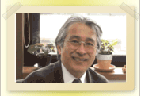

|

 |
|  |
 今井幸充(ユッキー先生) 今井幸充(ユッキー先生)
医学博士
日本社会事業大学大学院教授
| 所属学会 |
日本認知症ケア学会副理事長
日本老年社会科学会 理事
日本保健医療福祉連携教育学会 理事
日本老年精神医学会 監事
日本老年医学会評議委員
|
| 社会活動 |
NPO法人認知症予防サポートセンター代表
NPO法人認知症ケア教育機構代表 |
| 著書 |
「脱・介護地獄―痴呆性高齢者をかかえる家族に捧ぐ―」ワールドプランニング
「ボケを防ぐ食事と生活」主婦と生活社
「施設介護の実践とその評価」ワールドプランニング
「モデルケアプラン」ワールドプランニング
「認知症ケア標準テキスト」ワールドプランニング
「もしかしたら認知症かも」内田千恵子著 今井幸充（医療監修） |
その他、詳しい経歴はこちら |
 |
認知症掲示板
掲示板は認知症に関して自由にコミュニケーションしていただく場です。
※会員登録者は「閲覧・書込み」、未登録の方は「閲覧」のみが可能となっています。
認知症相談室（掲示板）へ |
|
 |
ここ数年の間に地域の精神科病院や総合病院あるいは診療所でも、もの忘れ外来を開設している所を多くみかけるようになりました。そして､今では一般にも「もの忘れ外来」が認知症を診る専門の外来と認知され、地域の認知症医療に貢献しています。その他に「メモリークリニック」「認知症外来」などの名称を使っている施設もありますが、診療内容には変わりありません。
前回に引き継き、今回も「もの忘れ外来」についてお話をしましょう。一体「もの忘れ外来」は、一般外来とどう違うのか、その診療内容から説明しますが、ここでは「もの忘れ外来」を最初に受診した時にどのようなことがなされるのか解説しましょう。
一般外来と「もの忘れ外来」、どう違うの
多くの高齢者やその家族は、もの忘れがみられたからといって、すぐに病気と思い病院を訪ねることはしません。なぜなら、もの忘れは、誰しもが経験する日常生活の中の当たり前の行為と受け止められているからです。それ故、家族が本人の異常に気づき、「診てもらった方がよい」と思うのは、もの忘れがひどく困ることがあり、またこれまでなかった家族が驚くような行為に出会ってからのことが多いようです。
そこで、どのような診療科を受診したらよいのか迷う訳ですが、もの忘れは脳の病気で、お年寄りの病気ですので、精神科や神経内科、脳外科などの脳の病気に関連した診療科や老年科を標榜する外来を尋ねる家族が多いようです。これらの診療科と「もの忘れ外来」との違いは、診療内容ではなく、恐らく診療医師の専門性の違いだと思います。「もの忘れ外来」を担当する医師の多くは、日本老年精神医学会や日本認知症学会で専門医資格を修得した医師ですので、その診療能力は水準以上と考えてよいと思います。その他に、専門医として神経内科専門医、脳神経外科専門医なども「もの忘れ外来」を開設しており、その診療能力は高いと考えられますが、前回のコラムで説明しましが、診療の視点が多少異なります。
最初の問診とは
どのような病気でも初診時には、主訴（主な訴え）からその原因となる病気を診断します。「もの忘れ外来」での主訴は、無論"もの忘れ"ですが、そのもの忘れの訴えが､認知症に伴う記憶の障害によるものか、軽度認知障害（第２回のコラムを参考にしてください）によるもの忘れか、あるいは全くの正常のもの忘れかを区別（臨床では鑑別という言葉を使います）することが「もの忘れ外来」の大きな役割です。
そこで、最初に「もの忘れ外来」を受診した時は、当然、どのような理由で受診したのか医師に伝えなければなりません。それが問診です。
問診とは、患者さんの訴えについての詳細を尋ねて、それを参考にその訴えの原因を探る方法を見いだす為に行います。最初に医療機関を訪れた時に、まずこの問診が診察の前に医師や看護師などの医療従事者によって行われます。
問診で尋ねる内容
問診では、患者さんの訴えだけを聞くのでなく、その訴えに関連した以下の事を尋ね、診断・治療に役立てます。
○ 主訴
医療機関受診のきっかけとなった症状を尋ねます。もの忘れの他に家庭の内外での混乱、その人らしからぬ行為や言動あるいは周囲が了解できない行為や言動など、最近の状態を具体的に伺います。その際にご本人が説明できれば良いのですが、多くは身近な家族が説明する事になります。
○ 現病歴
現病歴とは、主訴の原因になっている病気がいつ頃から始まり、これまでにどのような変化が見られたか、その経緯を本人や家族から聞き取ります。しかし、ここでも本人自らそれらを語ることは難しいので、ごく身近な家族、すなわち主として本人を世話している家族や身近な人から情報を得る必要があります。それ故、初診時には本人の状況をよく知っている人が同伴することが望まれます。
医師の関心は、病気の始まりの時期とその始まり方、そして現在の状況が病気の経過の中でどの程度の重症度なのか予測することです。無論「もの忘れ外来」では、もの忘れの始まりが重要となりますが、実際には、家族がもの忘れに気づく以前にさまざまな徴候が見られたのです。たとえば、物事への興味がなくなる、人を避けるようになる、話の内容が乏しくなる、「あれ」「それ」が会話に多くなる、失敗が多くなる、言い訳が多くなる、何度も同じことをする、外出を嫌う、だらしなくなる、などその人らしさが失われていく時期があったのです。このように生活上の変化を捉えることで認知症の始まりが予測できる場合があり、また経過などを含めて認知症の診断に役立ちます。
○ 既往歴
既往歴とは、これまでにかかった主な病気のことで、それらの病気とこれから診断しようとする病気との関連を予測するものです。例えば、アルツハイマー型認知症の場合は、糖尿病や高血圧症などが発症に関連がある危険因子に挙げられていますので、これまでにこれらの病気と診断され、治療を受けたか否かは重要な情報となります。あるいは脳卒中をはじめとする脳の病気、甲状腺の病気、その他の生活習慣病、そして手術や入院の有無などは認知症を来す疾患と関連しますので､これも重要な情報です。ただし、風邪や胃炎などの日常よくかかる軽い病気や怪我などは、情報としてあまり重要ではりません。
ここではまた、現在他の医療機関で治療中の病気についても尋ねます。特にどのような薬物をいつ頃から服用しているのか、その効果、副作用の有無などは、今後の治療を開始するに際して重要な情報となります。
○ 生活歴
その人の出生、教育歴、職歴、婚姻歴などの生活歴は、その人の古い記憶の保持を確認する意味で、またこれからの生活上の支援を行っていくに当たっての重要な情報となります。また、その人が若い頃から記憶力や判断力に障害があったか否かを判断するのにもこの情報は役立ちます。さらに、ここでは、現在の生活環境について尋ねます。今誰とどのような所でどうゆう生活を営んでいるか、生活の状態はどうなのか、この情報も医療介護領域では欠かせない情報です。
○ 家族歴
ここでは、血縁関係のある家族の既往歴や現在の治療を受けている病気について聞きます。主に家族内で発症する病気の有無を推測するための情報となりますが、若年型のアルツハイマー病の中には、家族発生性の常染色体優性遺伝の形態とる一群もありますので、特に若年者の場合は詳しく尋ねることがあります。
医師の診察
問診は、医師が行う場合と看護師や臨床心理士などの医療従事者が行う場合があります。大きな病院の場合は、主治医となる医師の診察の前に他の医療従事者が行うことがありますが、診療所などの小規模な施設では担当の医師が行いますので、ここからが医師の診察の始まりです。
身体的な病気と異なり、もの忘れを主訴に受診した患者さんには、まずそのもの忘れが正常のもの忘れか､認知症のもの忘れかを判断します。その違いについては第2回コラムをご参照ください。さらに重要なことは、患者さんのもの忘れの訴えが、身体の他の病気や脳の病気で起こってくるもので早急にその病気の治療を施さなければならない"治るもの忘れ"か、あるいは意識の障害に伴う一時的な認知症様の症状なのかを鑑別する必要があります。それには、ご本人との会話も重要になります。会話のやりとりがスムーズか、集中力は欠けていないか、辻褄が合わないことはないのか、その内容が真実なのか、態度に問題ないか、表情に問題ないか、などをさまざまな角度から観察します。
ご本人の会話の内容が正しいものか否かは、家族に確認する必要があります。本人の生年月日、出生地、兄弟の名前、また卒業した学校、配偶者の名前、子どもの人数などは、生活歴で家族にあらかじめ尋ねておくと、古い記憶の再生は可能かの判断が容易になります。また、診察日の朝食の内容や病院には誰とどのような交通手段を使って来たのか、などからは最近の記憶を確認できます。これらの内容はあらかじめ家族から正しい情報を得ておく必要がありますので、医師からの家族への質問としてお答えください。
ご家族があらかじめ準備しておくと
認知症の診断に必要な情報は､ご本人の生活の状態です。要するに、以前できたことができなくなったとしたら認知症を疑いますが、もともと生活の中で本人が行なっていないことは、認知症におかされていなくとも、できないことがあります。たとえば、料理をしたことのない人に「料理ができるか」と尋ねても「できない」と答えるでしょう。
そこで本人の生活状況を確認する際に、医師は、まず社会活動や社会参加するための複雑な行為はできているか尋ねます。例えば、交通手段を使って遠出ができるか、金銭管理ができるか、病気になったときに自分で薬の管理ができるか、このような行為は、若い頃自立した生活ができていた人であれば誰しも経験したことで、これらの行為ができなくなったことがあれは、軽い認知機能の障害を考えます。さらに、近所への外出や簡単な買い物あるいは整髪、化粧、ひげそり、服装などの身の回りことができるか､尋ねます。これらの行為がうまくできない場合は、食事を摂ること、入浴、着替え、排泄などの基本的な生活動作ができるか否かを尋ねます。このように、本人の日常生活を営む動作（日常生活動作ADLといいます）ができるか否かを尋ねますので、家族はその事をあらかじめ整理しておくと、突然質問されても正確な情報を医師に伝えることができます。
さらに医師が知りたいことは、本人の異常行動と精神症状の有無です。一般にこれらの症状は行動心理症状BPSDと言われています。普段の生活で今までの本人には考えられない行動、あるいは家族が何度も注意してもやめない困った行動などの異常な行動があるかを尋ねます。例えば夜間起きては台所で冷蔵庫の中を物色して食べている、突然怒りだし暴言や暴力を繰り返す、何度注意しても外に出てしまう、などの困った行動が見られるか。あるいはもの盗られ妄想や被害妄想、人物の誤認、見えないものが見える幻視、不眠、いらいら、うつ感などの精神症状の存在の有無を尋ねます。また、これらのBPSDが家族にとってどれだけ負担になっているかも尋ねます。なぜならこれらのBPSDは状況によっては家族にとって大変な思いを強いられることもありますし、またいろいろな症状があっても特に見守る程度でよい場合もあります。それらの捉え方は家族によっても異なりますので、感じたままを医師に伝えることで、そのご本人の生活上の困難さを把握します。
【ユッキー先生のアドバイス】
どんな病気でも病院に行くことは、大きなストレスです。特に認知症の人の中には、病院に行く事を頑なに拒否する人がいます。この様な人の対応は、第7回コラムを参考にしてください。「もの忘れ外来」受診前には以下のことをチェックしましょう
○ 多くの「もの忘れ外来」は予約にて受診を受け付けていますので、必ず受診前にその病院に問い合わせてください。また、毎日「もの忘れ外来」を開設している施設は少ないので、何曜日の何時から何時までの受診が可能かも問い合わせる必要があります。
○ 大学病院や大規模な総合病院の様な最新医療を提供する病院では、かかりつけ医の医療機関からの紹介状を必要としますので、そのような病院の受診を希望する場合は、かかりつけ医にお願いして紹介状を頂いてください。
○ 本文にも書きましたが、受診の際には必ずご本人の生活状況をよく知っている人が同伴しましょう。「もの忘れ外来」では､ご本人の生活状況が診断、治療に重要な情報となります。その状況をきちんと説明できる方の同伴を求めます。
【追伸】 認知症のADLならびに行動心理症状を手軽に評価できる評価票を私たちが開発しました。スペースの関係上その評価票を掲載するわけにはいきませんが、興味のある方は以下の書物をご覧ください
今井幸充、長田久雄著：認知症のAFDLとBPSD評価測度。ワールドプランニング、2012年 東京
＜管理人より＞
● ユッキー先生に取り上げてほしいテーマのある方は、「こちら」まで
● 他の方々に相談したいテーマがあれば、「こちら」 にお願いします。
|
| 第10回 『もの忘れ外来』の専門医はどのような先生？ |
もの忘れ外来では、アルツハイマー型認知症などの認知症を主な症状とする疾患の診断とその治療を行っています。このコラムでも認知症を来す病気の診断方法と治療についてご紹介しましょう。まずはもの忘れ外来でどのような医師が診療に当たっているのかこの回で紹介し、次回から数回にわたりもの忘れ外来の診療内容についてご紹介しましょう。
もの忘れ外来について
もの忘れ外来は、認知症の症状が明かな人だけを診察する外来ではありません。もの忘れを主な訴え（主訴と言います）とする人なら誰もが対象となり、また、もの忘れに関連するさまざまな病気や症状についても診察します。ここでは、もの忘れ外来を開設・診療している医師についてご紹介しましょう。
もの忘れ外来で診療している医師の多くは、老年精神医学を専門としている精神科医です。それゆえ、精神科を標榜している診療所や病院であればどの医師も認知症を専門としているとは限りません。一般精神疾患や小児精神医学、ノイローゼと言われる神経症を専門とする精神科医の場合には、認知症に対して積極的な診療を行わないこともあります。
一方で、神経内科、心療内科、脳神経（外）科を専門としている医師の中に認知症を専門とする医師もいます。また一般内科を標榜している診療所や病院の中には、もの忘れ外来を開設していなくても認知症の診療を行っている施設もあります。特に最近では、かかりつけ医と言われている地域の診療所医師の中に、認知症の診療に積極的な医師も多くなりました。
診療方法は概ね共通していますが、専門とする領域や外来の環境によってその手技は多少異なりますので、ここでは私なりの考えを述べてみます。
地域の健康を見守る ーかかりつけ医ー
かかりつけ医として以前から健康を見守っている地域の診療所医師の多くは、内科を標榜していますが、このかかりつけ医のアドバイスや相談が認知症の診療のきっかけになった家族も多いようです。多くの医師は、その専門診療科が消化器や循環器などですが、最近では、地域医師会が認知症診療の専門医である「認知症サポーター医」の養成に力を入れ、これらサポーター医が地域の診療所医師を対象に「かかりつけ医認知症対応力向上研修」を実施し、地域の認知症診療の質向上に務めています。
かかりつけ医は、介護保険の主治医意見書を提出する関係上、認知症医療に関心を持っています。たとえその医師が認知症医療を専門としてない場合でも、また最新の医療機器を整備していなくても、近くの認知症医療疾患センターと連携して、正しい診断と専門治療を提供することができるようになりました。この疾患センターは、かかりつけ医と地域の包括支援センターや在宅介護サービスと連携しながら、認知症になっても住み慣れた地域で、在宅で、末永く暮し続けることができるように支援しています。
かかりつけ医受診のメリットは、本人の健康状態や生活環境を以前からよく知っていることから、本人の生活上の変化にいち早く気づき、認知症の発見に貢献できます。また高血圧や糖尿病などの生活習慣病を合併症していても、その対応を同時にお願いできるのもかかりつけ医です。「もの忘れがひどくなった」「認知症が心配」「認知症かも」と認知症が気になったら地域のかかりつけ医にできるだけ早いうちに相談しましょう。
本来の病気をきちんと区別する ー精神科医ー
精神科医で認知症を専門としている医師の多くは、老年精神医学を専門とする医師です。これらの精神科医は、もの忘れ外来で、もの忘れの訴えが認知症のもの忘れなのか、それとも認知症の症状を持つ他の老年期の心の病気なのかを鑑別（区別）するために注意深く診察します。例えばうつ病や老年期特有の神経症あるいは若い頃から精神障害を患っていた人、大量飲酒、睡眠導入剤、抗不安薬、鎮痛剤などの脳に影響を与える薬物の服用が習慣となっている薬物依存の高齢者などは、認知症の症状を伴います。それゆえ、その原因となる本来の病気をきちんと鑑別し、その元になっている病気の専門治療を施すのが精神科医です。ですから、これまでの本人とことなる異常の精神状態が観察されたら、もの忘れ外来の精神科医を訪ねるのもその解決に役立ちます。
認知症を専門とする精神科医は、無論、認知症を来す疾患の診断や治療を積極的に行いますが、中でも認知症の人によく見られる、興奮、イライラ、攻撃、動き回り、大声で怒鳴るなどの激しい怒りの反応、夜間の不眠、日中の理解に苦しむ行動、徘徊、その他の困った行動、あるいはもの盗られ妄想、幻視症状、不安、うつ状態、強迫症状などの精神症状の薬物療法も専門としています。それ故、在宅でこのような症状がみられた場合は、もの忘れ外来の精神科医の受診を奨めます。
さらに、介護者が精神負担を感じ、時に倦怠感、食欲不振、胃痛や下痢などの胃腸症状などの身体症状出現時に、介護者が気楽に相談できるのが担当の精神科医です。
認知症治療に係るその他の専門科医
認知症診療に係わるその他の専門医は、神経内科医と脳神経外科医です。神経の病気で最も頻度が高いのは、脳梗塞、脳出血などの脳卒中で、これらは脳血管性認知症の発症に関連します。これらの原因として、高血圧、糖尿病、高脂血症、心臓疾患などが挙げられますので、生活習慣病の管理も神経内科医にとっても重要な仕事です。一般に神経内科では、脳の血液の流れの異常（脳循環障害）による脳出血や脳梗塞の再発予防、パーキンソン病、小脳疾患、脊髄疾患など神経の病気を得意とします。
脳神経外科では、脳梗塞、脳出血、慢性硬膜下血腫、正常圧水頭症、脳腫瘍などの脳の病気の中には、外科的な対応が必要な場合があります。その時に脳神経外科医がこの治療に係わりますが、これらの医師の中には、特に手術が必要でないアルツハイマー型認知症や、その他の脳の神経細胞が変性して起こる、レビュー小体型認知症や前頭側頭型認知症の診断や治療に係わります。
病院、医師の選び方
多くの家族は、認知症の初期にみられる物忘れを「歳だから」とあまり深刻に受け止めないことが多いようです。日常生活で物忘れによる失敗が重なり、異常な行動や心理症状がみられると、はじめて本人の異常に気づき専門家の受診を決意する家族も多いようです。
物忘れに気づき、専門医を受診する際に、どこの病院あるいは診療所の、どの診療科を受診したらよいのか迷うことがあります。そのような時には、まず日頃かかりつけている医師（かかりつけ医）に相談してみてください。多くの開業医は、近辺の専門医に関する情報を持っています。また大学病院や全国約１５０カ所の病院に設置されている認知症医療疾患センターを受診する場合は、かかりつけ医の紹介状を必要とします。かかりつけ医がいない場合は、地域包括支援センターや介護保険課等を訪ねると病院や専門医の情報を得ることができます。最近では地元医師会が、サポーター医の紹介や、認知症を診療してくれる診療所のリストを公開しているところも多くなりました。
また、「認知症介護マップ」と称して、地域の診療所や病院、包括支援センター、在宅介護事業所の所在地を地図上にまとめたポスターを発行している自治体もありますので、保健所等を訪問した際に確認しておくのもよいでしょう。
認知症の診断にはCTやMRI（共磁気共鳴画像法）の検査が必要ですので、これらの設備を有する施設の専門医を受診することを奨めます。しかし、多くの診療所ではこのような画像診断ができませんが、必ずしもこれらの検査が可能な病院に拘る必要はありません。それぞれの診療所は、施設の整った病院と連携（病院・診療所連携）し、複雑な検査を患者さんに負担をかけない方法で実施しています。その制度を利用すると、かかりつけ医を変えずに、診療を続けることができます。
【ユッキー先生のアドバイス】
最近のインターネットの普及に伴い様々な情報が得られますが、認知症医療の専門家の検索も難しいことではありません。下記のアドレスにアクセスして、地元の専門医を尋ねてください。
○ 日本老年精神医学会：高齢者の心の病気と認知症に関する専門医
http://184.73.219.23/rounen/a_sennmonni/r-A.htm
○ 日本老年精神医学会：高齢者のこころと認知症を診断できる病院と施設
http://184.73.219.23/rounen/H_sisetsu/r-H.htm
○ アルツハイマー病研究会会員認知症診療施設一覧
http://jaad.net/list_map.html
○ 日本認知症学会専門医施設一覧
http://dementia.umin.jp/kyoiku2012.pdf
＜管理人より＞
● ユッキー先生に取り上げてほしいテーマのある方は、「こちら」まで
● 他の方々に相談したいテーマがあれば、「こちら」 にお願いします。
|
認知症の話題で多いのが介護の大変さについてのテーマです。そこには介護をする人とされる人との関係があり、どうも、認知症の人が悪役のように扱われていることが多いようです。確かに、認知症の人は、自分の意見や要求などを相手にうまく伝えることができません。また相手の言いたいことや望んでいることを会話の中からとらえることが難しいので、いらいらした感情だけが表面に現れ、介護する者にとってはその対応が厄介なこともしばしばあります。
認知症の人とその介護者に纏わるエピソードについて、もの忘れ外来の診療では、毎日のように家族からの相談を受けます。先日、認知症の人とその配偶者に纏わる出来事があったので、その話をしましょう。
いつも頼りにしていたご主人が入院することに…
中谷圭子さん（仮名）は、アルツハイマー型認知症と診断されて4年目を迎えました。これまでご主人の登さん（仮名）と二人暮らしで、この4年間ご主人が圭子さんのお世話をしてきました。圭子さんは､買い物や遠くへの外出、あるいは決められた時間に薬を呑むなどの複雑な行為はできませんが、ご主人と一緒であれば、家の中の掃除、調理、洗濯などの家事は何とかできていました。もの忘れ外来にはいつもご主人と2人で来院しますが、圭子さんはご主人を頼りにし、とても仲むつまじい関係でした。
先日、予約外で、長女の綾子さん（仮名）が相談したいとのことで、1人で来院されました。綾子さんによると、登さんが高血圧で倒れ、精密検査のために入院したとのことです。無論、圭子さんを１人にはしておけないので、綾子さんが､自分の家に一時引き取ったのですが、当然のことながら、圭子さんには、夫の登さんに何が起こったのか知る余地がありませんし、まして、突然長女の家に連れてこられたわけですから、当初から「お父さんのところへ帰る」と訴えていました。そして、2、3日後には、それが昼夜を問わず続いたので、綾子さんはその対応に苦慮している、との相談でした。登さんの主治医に相談したら、鎮静剤と睡眠導入剤を精神科でもらうように言われたので、来院した、とのことでした。
介護に直面した娘さんの戸惑い
綾子さんは、お母さんのこの状態を認知症が進んでしまったと思っています。そして「これから先、面倒をみられるのか」、「この状態が続いたら、自分達の生活がだめになってしまう」と訴えていました。また綾子さんの夫は、「夜間、圭子さんのために眠れないので仕事に差し障りがある、何とかして欲しい」と綾子さんを攻めるようになり、夫婦関係もぎくしゃくしてしまいました。このように、これまでの綾子さんの生活が一変してしまったそうです。
主治医の私は、「お母さんとお父さんはとても仲が良かったのですね。だから、お父さんのことがとっても心配なのですね。」と話しかけると、綾子さんは、「お父さんが入院したことを何度伝えても、お母さんは『家に帰る』と言うのです。お父さんの様子など一度も聞きませんが・・」とのことでした。綾子さんにとって、お母さんのこの行動は、予測していたことかもしれませんが、実際にその状況に直面すると、受け入れることができず、何とか落ちつかせたい、と思うのでした。綾子さんにしてもお母さんの気持ちが分からない訳ではないのですが、家での混乱にどう対応してよいのか、戸惑ってしまっているのです。だからお母さんをどうにか落ちつかせたい、薬で何とかしたい、と思ったのでしょうね。
綾子さんのこのような気持ちも分かります。今回のケースでも、どうしても圭子さんの気持ちよりも綾子さんの言い分が優先されてしまいます。なぜならば、圭子さんの行動は、理解できない行動であり、周囲の人間にとっては異常な行動ですから、一番手っ取り早い解決方法として、薬で治そうと、まるで頭痛でも治すようにお薬を使おうとします。でも、このようなケースは薬が最善の解決方法でない場合が多いようです。
介護を通して母と向き合い、娘さんが気付いたこと…
ともかく、綾子さんとお母様の気持ちについて話し合いました。私の「お母様は、お父様と仲が良かった」という指摘に綾子さんはふと思いにふける顔をしました。普段の登さんと圭子さんの生活、登さんのお世話の方法、二人でいるときの圭子さんの落ちついた状況など話して行くうちに、綾子さんは「母は、お父さんのことが心配なんですよね。どうしたら良いのでしょうか」と、藥より良い方法があることに気づいた様です。でも、私には、良いアイデアはありませんでした。ただ、「お母さんの心配な気持ちが少しでも和らぐと良いですね」と申し上げると「お父さんのお見舞いに連れて行って良いでしょうか？」と尋ねてきました。「無論、大賛成です」と申し上げたのですが「それによって益々家で不安が強くなりませんか」と綾子さんは心配していました。
綾子さんは、お母さんが真実を知ることでかえって不安が強くなることを心配していました。確かにそのような事例も経験しています。私の経験では、認知症の人に真実を伝えることは一般の人と同様に、動揺もあり、それが原因で益々混乱する人も見かけます。しかし、それでもお父さんの病院に行ってお父さんと面会を重ねる事で、だんだん「お父さんは何処」から「お父さんに会いに行く」に変わります。そして家でも落ちついてくるようです。
この事例では、綾子さんがお母さんの思いを理解し、お母さんの気持ちを叶えるためにどうしたらよいか、話し合いました。そこで、お母さんをお見舞いに連れていく。そして、毎日のように「お父さんは病院でどうしているかな」「あしたまた検査があるみたいよ」「先生が心配しないで良いです、とおっしゃっていたわよ」など、お父さんの話題をあえて持ち出す、夜の混乱には「明日になったら、お父さんのお見舞いに行きましょうね」と対応する、このようなことを綾子さんと考えました。
1週間後、綾子さんと圭子さんがもの忘れ外来を受診したときに綾子さんは、「最初、ちょっと大変でしたが,何とか落ちつきました」と、とても満足げな顔で報告していました。
「何とかしなければ」から「してあげよう」の介護
この度のケースは、よくあるケースで、その対応も教科書どおりの対応方法かもしれません。しかし、重要なことは綾子さんが「お母さんはお父さんのことが心配なんだ」と気づいたことです。そして「お母さんを何とかしなければ」ではなく「お母さんを何とかしてあげよう」に変化したのでした。この「しなければ」と「してあげよう」とでは、大きなちがいがあります。自分たちのためにしなければならない、と考えるか、母親のために手を貸そう、と思うかではおのずとお母さんへの対応が違うはずです。
【ユッキー先生のアドバイス】
介護者にとって認知症者の異常な行動は、薬でなければ治まらない、と考える人が多いようです。しかし、多くの場合は薬の副作用や選択ミスのため、一日中ボーっとしていたり、手が震えたり、また時にはふらつきのために骨折する人もいます。このような理由から落ちつく藥（向精神薬）を認知症に使うことは慎重にしなければなりません。
しかし、向精神薬は危険な藥、呑ませてはいけない薬ではありません。認知症の人に適した薬の選択と適量の服用で良い効果が得られれば、本人にとっても苦しみが軽減されますし、生活の質も高まります。そこで主治医の先生から睡眠導入剤や落ちつく藥が処方されたら以下の点に注意し、そのような症状が一つでもみられた時は担当の先生に連絡してその対処を早急にお願いしてください。
１） 日中うとうとと居眠りするようになった
２） 朝、なかなか目が覚めない
３） 日中でも元気がなく,ボーとした感じが目立つようになった。
４） 日中、すぐに横になろうとするようになった。
５） 周囲への感心を示さなくなった。
６） 呂律が何となく回らない感じになった。
７） 立ったときに、ふらつくことが何度かあった。
８） 歩いているときに、よたよたした感じになった。
９） 転びやすくなった。
１０） 手が震えや涎を垂らすようになった。
向精神薬の効果を適切に評価して、早期に副作用に気づき対応できたとすれば,これらの薬は介護の大きな手助けとなります。そこで重要なことは家族や介護専門家の役割です。医師は、薬を処方できますが、特に在宅の場合に,その効果を直接確認することはできません。それゆえ、副作用のチェックや効果の判定は、いつも側にいる家族や介護職の人に委ねるしかありません。
このことから医師は、ご家族に薬の効果や副作用のことを詳しく説明し、その結果を報告してもらうことをお願いします。上記のような副作用については、お薬を投与する前に、医師や薬剤師から詳しく説明があると思いますが、その説明を頭に入れて、日頃の認知症の人を観察していただきたいと思います。
もし、仮に主治医から藥の副作用等についての説明がなかったら、確認することを忘れないでください。医師は、治療に対して患者さんやその家族に説明し同意を得る義務がありますので、薬の説明をお願いする事に躊躇せずに遠慮なくお尋ねください。
このように医療と介護者が連携する事で、認知症の人に適切な薬物療法が可能になりますし、それが介護の負担を軽減することに役立ちます。しかし、すでに述べましたが、認知症の人の困った行動に対する対応の第一選択が薬物療法ではありません。まずは、認知症の人が何を訴えたいのか十分に話しを聞くことが始めの一歩です。困った行動を「何とかしなければ」とその行動を抑え込むことを考えるのでなく、何に困って、何に不安を感じているのか、どのようなことが思うように行かずイライラしているのか、など認知症の人の気持ちになりその解決策を見つけ出すことです。そこで「何とか手助けしてあげよう」と、認知症の人の抱えている問題を解決する方法を考え、施すことが最優先されることを忘れないでください。
＜管理人より＞
● ユッキー先生に取り上げてほしいテーマのある方は、「こちら」まで
● 他の方々に相談したいテーマがあれば、「こちら」 にお願いします。
|
「物盗られ妄想」は、認知症にみられる症状としてよく知られています。本人がしまい忘れた財布を「誰かが盗んだのかもしれない」と思い、その邪推が「盗んだのにちがいない」と妄想に発展し、身近な家族を「ドロボー」と攻めたてるので、家族にとっては大変困った症状の一つです。その他に「いじめられる」、「嫌われている」、「殺される」などの被害妄想や「夫が浮気をしている」嫉妬妄想もみられます。中には自分の配偶者に向かって他人のように振る舞ったり、そこにいるはずのないすでに亡くなった人や見知らぬ人が「そこに居る」と思い込んだりする妄想もあります。何故、このような妄想が認知症の人にみられるのでしょうか。
妄想の特徴とは
妄想とは、現実にあり得ないことを真実と強く思い込み、周囲の人が否定し考えを訂正させようとしても訂正不可能な間違った考えを言います。すなわち、認知症の人が「物盗られ妄想」を持ったときは､それをいくら否定しても、そんなことはありえない、と説明しても、その考えを決してかえることはあり得ません。
認知症の人の妄想の出現頻度は、比較的高く、東京都の調査によると認知症の人の約15%に妄想が見られ、またアルツハイマー型認知症の15~56%に、脳血管性認知症の27~60%に見られるとの報告もあります。この妄想の特徴は、被害的な内容が多いのですが、特に自分の財布や貯金通帳が盗まれたと訴える「物盗られ妄想」は、8割以上と言っても過言ではありません。妄想が主たる症状の統合失調症では、間違った考えが固定しているので、妄想の内容が常に同じなのに対して、認知症の妄想は、内容がコロコロ変わること、過去の出来事に関係した内容であること、被害妄想の対象がごく身近な人という特徴を持っています。
ちょっとした言動や仕草がきっかけで…
では、何故、身近な人が被害妄想の対象となるのでしょうか。例えば、「物盗られ妄想」がある認知症の人のこころの動きを予測してみましょう。大切な財布がないことに認知症の人が気づき「大変だ」と慌てます。その時、自分が「どこかにしまい忘れた」とは思わず、捜すこともしないで、「誰かが財布を持って行った」「誰かが盗んだにちがいない」と考えるのです。その時たまたま側にいたいつもよく世話してくれる人が目に入ると、その人が「盗んだに違いない」と確信してします。そこで「その人をドロボー扱いしたらこれらの関係が悪くなる」などとは考えず、短絡的に「おまえが財布を盗んだ」と責め立ててしまうのです。そうなると当然ドロボー扱いにされた人は、強く否定しますし、怒ります。その様子をみてますます「こいつが盗んだのにちがいない」と確信してしまいます。こうなるとどんなに否定し、説明しても訂正不可能になってしまいます。
他の被害妄想も周囲の人のちょっとした言動や仕草がきっかけになる事が多いようです。食事の時間に家族が話題にしていることが全く理解できなかったり､自分への関心が示されなかったりすると､「自分をのけ者にする」「自分がいない方がいい」など被害的に考えてしまうのです。さらに配偶者が自分を無視する態度や言動を見せると「浮気をしている」と嫉妬の感情に発展することもあります。当初は、家族からの「そんな事はない」「思い過ごし」との説得に、疑いをぬぐい去らないまでもその意見を聞き入れようとしますが、そのうち全く訂正不可能な確固たる妄想に発展していきます
人物誤認にかかわる妄想症候群
人物誤認に関連した一連の妄想群を妄想性人物誤認症と言い、認知症によく見られます。この症候群の中には、「カプグラ症候群」「幻の同居人」「鏡徴候」「TV徴候」などの症状があり、認知症に見られることが多いのです。
「カプグラ症候群」は、「自分の身近な人間がそっくりの他人にすり替えられてしまった」と確信する妄想で、1923年にカプグラCapgrasらが「自分の娘が何人もいて替え玉として周囲のさまざまな人にすり替わっている」と確信していた53歳の女性の症例を報告し、このような妄想をカプグラ症候群と名付けました｡当初は、「替え玉錯覚」とも言われ、女性に特有で統合失調症、妄想症、感情病などの症状の一つとされましたが、現在では認知症の人をはじめ脳に障害のある人にも出現することが知られています。
「幻の同居人」は他人が自分の家に住み込んでいると確信する症状で、訴えとしては「○○が部屋にいる」「子どもが沢山いる」など、と訴えます。この場合、それが幻視なのか、あるいは妄想性の誤認症なのかの鑑別が困難なこともあります、「幻の同居人」の場合は、姿はみていないが「確かに家にいる」と確信し、いくらそのような人はいないと説明しても「居る」と確信します。
「鏡徴候」は、鏡に映った自己像を自分自身と認識できず他の人間と取り違えるために､鏡に向かって話しかけたり､食べ物を与えようとしたりする行動です。この徴候の特徴として、重度の認知症高齢者にみられることが多く、鏡の中の自分が認識できないために鏡を見てそれを他人と誤認してしまいます。
TV徴候は、テレビの場面を現実のものと取り違える状態で、ＴＶの出演者と会話したり、ＴＶに向かって大声で怒りを露わにしたりします。
訴えを理解し、共感する態度で接すること
事実と異なることを確信もって訴えると、それは家族にとっても大変ショックなことです。特に、その対象者が最も身近で、その人を毎日世話している家族であればなおさらのことです。これまでもの忘れによる日常生活の混乱があっても、その介護者は「歳のせい」とあまり深刻に受け止めなかったのですが、このような妄想が出現すると、その対応に困り果て、「もの忘れ外来」の受診を決意するようです。
そこで「もの忘れ外来」では、まずこれらの妄想の背景に認知症があるか否かを明らかにします。妄想を来す病気は、認知症をはじめ気分障害や統合失調症などの精神障害や多くの脳の病気や身体の病によってもみられることがありますのでこれらを鑑別します。
妄想は、向精神薬で良い効果が得られることも多いので、薬物療法を試みるのも一つの選択肢です。代表的な向精神薬は、高齢者の場合、副作用を考慮して通常の成人投与量の1/2から1/3以下の量から投与を開始します。それであまり効果が得られなかった場合は、副作用に注意しながら増量を試みますが、あくまでも薬物療法は対症療法です。
妄想を消失させるには、まずは妄想の発生原因を明らかにします。中には、脳の病気や身体の病気で二次的に脳が冒されて妄想が生まれる場合もあります。その場合は､まずは病気を治すことが優先されます。もっとも多い妄想の原因は、認知症の人を囲む様々な環境です。例えば、家庭の都合で家具の配置を換えたり、介護者が本人の話を聞かずに無視したり、またショート・ステイのように住み慣れた環境が突然変わることなどが原因の場合があります。このような周囲の人のちょっとした認知症の人への配慮が欠けることで出現することから、妄想がみられた場合は、周囲の言動や態度、環境に配慮した対応が重要になります。
【ユッキー先生のアドバイス】
妄想は、訂正が不可能ですので、本人への否定や説得は、時間の無駄で、本人をかえって興奮させてしまいます。家庭での対応は、以下のようにすると良いのかもしれません。
１）まずは、本人の話を聞きましょう。妄想の多くは被害的な内容で、それが介護者に向けられたものであると､つい直ぐに、否定し、訂正しようとむきになりますが、そこを我慢して、本人に共感する態度で接するようにしょう。
２）本人が「おまえが財布を盗んだ」と攻撃してきたら、「財布がなくなったの？ それは大変」「誰かに盗まれたの」と本人に質問を返してみてください。本人の言葉に対して、反論したり、攻撃するのでなく、本人の訴えをそのまま本人に質問として返してみてください。
３）さらに攻撃が続き、介護者に向けて興奮した場合は、話題を変えたり､「ちょっとトイレに行って来ますね、すぐにもどりますから」など本人から一度離れることです。そうすると興奮がおさまる場合もあります。その際、本人から逃げるような振る舞いをするとよけいに興奮してしまうので、必ず、席を立つ理由を説明してください。
４）妄想が解消しない場合は、できるだけ早い時期に精神科の専門医に相談する。
＜管理人より＞
● ユッキー先生に取り上げてほしいテーマのある方は、「こちら」まで
● 他の方々に相談したいテーマがあれば、「こちら」 にお願いします。
|
先日のもの忘れ外来でのことです。初診の患者さんのカルテにメモ書きが挟んでありました。「本人には、『妻の健康診断の付き添』と説明して連れてきましたので、その点を配慮して診察してください」といった内容で、付き添ってきた娘さんからのものでした。
もの忘れ外来でよくみられる家族の訴えです。初診の患者さんの中には、このケースのように、家族がもの忘れを心配して何とか受診させようとするのですが、断固拒否する人がいます。このような抵抗に遭うと、どうしても受診を躊躇してしまい、初期の対応が遅れてしまいます。また騙して無理矢理病院に連れて来ようとすることで、家族の精神的負担がさらに大きくなってしまうようです。
なぜ受診を拒むのか？
私たちの普段の生活で、体調がおかしいと感じたときには、まずお医者さんに診てもらうことを考えます。それなのに何故、認知症の高齢者はそれを極端に嫌うのでしょうか。私のもの忘れ外来で、「何故、病院に来たくないのか」直接患者さんに尋ねたことがあります。その答えとして最も多いのが「自分はおかしくないから」でした。その他には「病院が嫌い」「薬を呑みたくない」「家族が馬鹿にするから」などで、その理由はまちまちです。でも、このような訴えを聞いていると、一生懸命に自分を守っているように思えるのです。「私はぼけていない」「みんなが "ぼけ"と馬鹿にする」「家族の世話になりたくない」「入院なんかしたくない」「施設なんかに入りたくない」と言うこころの叫びが聞こえてきます。
認知症は、エピソード記憶の障害がその代表的な症状ですので、新しく体験したことを全て忘れてしまいます。それ故、もの忘れで失敗したことや家族に迷惑をかけたことを覚えていません。ですから家族や周囲の者が「どうして覚えていないの」「今言ったばっかりじゃないの」と怒っても、呆れても、ご本人は何故そんなに怖い顔をするのか、なぜそんなに怒るのか、なぜいつも文句ばっかり言うのか、その理由が分からないのです。やがて、周囲の人が皆敵となり、自分を攻撃しているようにしか思えないのでしょう。だから「病院に行きましょう」と言っても、「自分はおかしくないから病院に行く必要がない」と拒否するのです。
認知症の人の病院に行きたがらない理由をこのように考えると納得がいきます。そして、さらに家族が何とか受診させようとごまかして病院につれてきたとしても、本人は「だまされた」とますます家族を信用しなくなり、ご自分を守るために、家族を攻撃し、医師や看護師も"ぐる"と思い、ますます病院が嫌いになる、また病院が恐ろしいところと思うようになってしまうのです。
どうすれば受診してもらえるか
私が、まだ大学病院で一般精神科外来を担当していた頃に、ときどき家族から受診を嫌がる高齢者の相談を受けました。その時、ご家族には「どのような手段でもかまいませんから外来にお連れください。お連れくだされば何とかします」とアドバイスをしていました。そして家族は、「健康診断に行こう」「ごはんを食べに行こう」「自分が調子悪いから病院に付き添ってほしい」などごまかして病院に連れてくるのですが、認知症の人は、すぐにだまされたことに気づきます。例えその場では怒りを露わにしなくとも、その後どんなに説得しても病院には行きませんし、家族との信頼関係も崩れ、家庭内では家族を攻撃するような悲惨な状況になってしまうのです。要するに騙して受診されたところで、私は何もできなかったし、かえって認知症の人に混乱を招いてしまったのです。「何とかする」と言った私のアドバイスは、医師のおごりであり、認知症の人への愚弄だったのですね。
そこで、本人には、最近のもの忘れの状況を説明し、早く診断し治療することで、少しでももの忘れの進行を遅らすことができることを説明し、納得した上で受診してもらうことが最善策と考えました。ご家族には、「本人に、今までのもの忘れの例を挙げて、周囲が困ったことを伝えてください。そして同時に、『治るもの忘れもあるので、早く専門家に診てもらいましょう』と説明して受診を勧めてください」とお願いします。
多くの家族は、このような説明で素直に受診する訳がない、と考えますが、そこで一言付け加えて欲しい言葉は、「私（家族）の為に診てもらって欲しい。」です。「（貴方が）認知症になったら、私がとっても困る。だからお願い、私の為に診てもらって」とお願いしてみてください。認知症の人も、夫であり、人の親ですので、家族への気遣いは十分残っているのです。
もの忘れのひどい高齢者は、みんな自分が以前と違う、何かおかしい、と気づいています。そして、これからどうなってしまうのか、不安でいっぱいなのです。だから、上からの目線で「もの忘れがひどい」「ぼけたのよ」「困ったわね」と言われたら、それに抵抗するために「ぼけてない」と言い張るしかないのです。そして病院で「ぼけ」と診断されたら困るのです。家族が、このようなご本人の気持ちを分かった上で、馬鹿にしているのではなく、心配している、このまま病気が進めば家族が大変になる事を、こころを込めて説明し、根気よく受診を説得してください。納得した上で受診すると、検査も受け、例え認知症であっても治療に積極的になっていただけるのです。
メモを入れた娘さんのケース･･･納得したご本人
先日のもの忘れ外来の例では、娘さんからのメモを読んだ時に、どのように対応したら良いのか困リました。診察室に入室してから、まず奥さんには、健康診断の必要性を説明し、そして最近のもの忘れのことを尋ねながら、本人にも同じ質問をしました。そして、もの忘れが進むと、生活が大変になり、ご家族の世話が必要になること，など時間をかけて説明しました。ご本人が、自分のもの忘れもについて口にしたときに、タイミングを見計らって、奥さんをはじめご家族の皆さんがご本人のもの忘れを心配していること、なぜ今日ご本人が受診しなければいけなかったのかを正直に説明し、検査を勧めました。
その時点では、まだ完全に納得はしていませんでしたが、CTの結果説明で、小さな脳梗塞が沢山あること、脳の血液の循環がうまくいってないこと、これがもの忘れの原因で、治療が必要なことを説明しました。そして血圧を測ると200/95と高く、本人も驚いていたようでした。そのうちご自分のもの忘れがひどいことを真剣に話しだし、病気への不安も本人の言葉で話し始めたのです。診察室を去るときには、ご本人から「先生、また来るからね、頑張って治すよ」と笑顔で退出しました。
気持ちを理解し、気持ちを伝えること
認知症も病気です。どんな病気でも本人しか分からない辛いことがあります。その人自身が失われていく認知症という病気に、本人のみならず、周囲の人も理解できず、苦しみ、不安になり、何とかしなければ、と思い、つい、お互いの言葉も表情も厳しくなってしまいます。でも、本人のつらい気持ちを理解すると同時に、本人にも家族の心配な気持ちを分かってもらう努力が必要です。このようにお互いの気持ちを理解し合えたら、本人への言葉使いも、表情も、優しくなれるかもしれませんね。その優しさは、本人の安心と家族への信頼に繋がるのです。
【ユッキー先生のアドバイス】
ご家族が本人の異常に気づいた時に、まずどのような医療機関に相談すれば良いのか迷うことが多いようです。ここでのアドバイスは、どのようにして認知症専門医を探すかお教えします。
１）まずは、かかりつけ医の先生に相談してください。今、地域の医師会では認知症サポーター医の育成に力を入れています。かかりつけ医の先生であれば、医師会の会員の先生が多いので、地域の認知症専門医を知っているはずです。場合によっては、地域の医師会に問い合わせると、そのリストがあり、近くの専門の先生を紹介してくれます。
２）平成21年頃から認知症疾患医療センターが地域に開設されています。全国150箇所に開設予定で、随時地域の総合病院や精神科病院に開設されます。そこに電話をして、担当の医療ソーシャルワーカーに地域の専門医を紹介していただくことも良いでしょう。以前はこのような担当者を「認知症連携担当者」と呼んでいました。ただ、このセンターでは、最先端の医療機器で認知症を診断し、治療方針を示すことはしてくれますが、実際の治療や生活のサポートは地域のかかりつけ医が担うことになっています。
３）地域包括支援センターは、気楽に認知症の医療や生活支援について相談できる場所です。認知症の人の対応に困ったら相談してみてください。包括支援センターの主任ケアマネジャー、社会福祉士、保健師のいずれかが地域の専門医の紹介や、困りごとの相談に応じてくれます。
４）インターネットで調べることもできます。日本認知症ケア学会（http://www.chihoucare.org/）、日本老年精神医学会（http://www.rounen.org/）、アルツハイマー病研究会（http://jaad.net/）などのホームページを診ると、専門医や認知症ケア専門士が紹介されています。
５）認知症を扱う診療科は、精神科、神経内科、脳神経外科、総合内科等です。しかし、この標榜をしている全ての診療所や病院に専門医がいるわけではありません。看板だけを頼りに受診しても専門医でない場合があります。必ず、事前に調べてから受診しましょう。
認知症という病気との闘いは長期戦です。本人も家族もその戦いに疲れないようするためには、自分たちだけで解決しようとせずに、地域のいろいろなサービスを有効に利用し、できるだけ楽な介護ができれば良いですよね。認知症の人と真正面から向き合い、こころを込めて本音で対応する事が、「楽な介護」の第一歩かもしれませんね。
＜管理人より＞
● ユッキー先生に取り上げてほしいテーマのある方は、「こちら」まで
● 他の方々に相談したいテーマがあれば、「こちら」 にお願いします。
|
「まさか!!もの忘れに効く薬があったなんて」、これは今年の1月18日にNHKの人気番組「ためしてガッテン」で放送された時のタイトルです。実は、このタイトルにちょっと違和感を持ちましたのでこのコラムの場を借りて、抗てんかん剤と認知症治療との関係についての正しい情報を提供したいと思います。
「てんかん」とは
「てんかん」は、脳の中で異常な放電が突然起こり、様々な症状がみられる病気で、この症状をてんかん発作症状と言います。代表的な発作症状には、突然、意識が喪失して痙攣を起こす大発作があります。この痙攣の多くは、10秒から15秒ぐらいで消失し、その後深い眠りにつき､目を覚ました時にはいつもの生活ができる状態に戻っています。
てんかんの治療の難しい点は、いろいろなタイプの発作症状があり、中には専門家でも「てんかん」と診断することが難しい例もあります。例えば、意識が一瞬だけ消失してしまう発作は、周囲の人が発作に気づくことはほとんどありません。本人も自分で何が起こったのか分からず、また「いつの間にか寝てしまった」と思い込み、病気に気づかないことが多いようです。
このような発作は、時として先日の通学途中の児童を巻き込んだ重大な交通事故のように大きな社会問題を引き起こすことがあります。しかし、てんかん発作の多くの場合は、きちんと診断し、治療を受ければ、発作を起こさず、何ら生活に問題なく毎日を送ることができます。
認知症と「てんかん」の関係
認知症とてんかんの関係について述べましょう。一つは、てんかん発作の中に認知症と思わせる発作症状があること、そしてもう一つは認知症の人の中に、合併症としててんかん発作を起こすことがあります。
前者の場合は、認知症とは言いません。それは「てんかん」という病気がもたらす発作で、症状として、自分が何処にいるのか分からない、今の季節や時間が分からない、この人が自分とどのような関係にある人か分からない、と言った場所、時間、人の見当識が突然分からなくなり、また集中力も冒されますので、当然記憶力も障害されます。このようなことが突然起こると、高齢者の場合には、周囲の人は認知症と間違えることがあります。しかし、このもの忘れは、発作症状ですので認知症の人のもの忘れとは質が異なりますし、専門医がこれを認知症と診断することはまずありません。また、見当識の障害も発作症状として起こりますので、突発的で、その症状が長く続くこともありません。
NHKの「ためしてガッテン」のタイトルをみると「もの忘れに効く」とあり、「認知症に効く」とは言っていません。また、インターネットのサイトを読むと、てんかん症状の一つに記憶障害をきたすものがあり、この治療に抗てんかん剤を使うことで、もの忘れが治ると説明しています。
確かにてんかん発作による記憶障害であれば薬で治りますが、認知症の人を介護する人やもの忘れが気になっている人にとっては、大変紛らわしい表現で、誤解を生むことは否めません。メディアの力は大きいので、NHKは情報の伝え方に十分注意すべきですね。このタイトルでは、視聴率確保のためのタイトルとしか思えません。
後者の場合は、アルツハイマー型認知症の進行した例に間代強直発作（筋肉の異常な興奮と痙攣発作）が見られることがあります。アルツハイマー型認知症による脳神経細胞の変性が異常な放電をもたらし、けいれん発作が生じるのです。この症状は、認知症の人の20％前後に見られますので､比較的頻度が高い合併症といえます。しかし、多くのケースですぐに痙攣発作は消失してしまいますので、発作が起きてもあまり慌てる必要はありません。発作が止まり、意識が戻ってしばらく落ちついたらかかりつけ医に相談してみてください。
この場合は、ほとんどが抗てんかん剤の使用で発作の再発が防げます。しかし、中には、発作を何度も繰り返したり、また長時間発作が続いたりする場合があります。この場合を重積発作と言いますが、早急に発作をとめる医療処置が必要です。
ついでに認知症の治療薬として抗てんかん剤を用いられている例をご説明しましょう。実は、この抗てんかん剤は、認知症の人の激しい興奮やイライラ、異常な行動、喜怒哀楽といった気分の不安定な状況など、介護者が困るような気分の変調に有効な場合があります。抗てんかん剤のなかで、バルプロン酸やカルバマゼピンというお薬は、てんかん発作を抑える働きと同時に、気分を調節する作用もありますので、臨床では躁うつ病の患者さんにも使います。ただ、これらの薬は、高齢者の場合にふらつき、眠気、活動の低下、などの副作用が多く出現するので慎重な投与が望まれます。しかし、精神科の薬としてよく使われている抗精神病薬よりも副作用出現が少ないので、認知症の人の行動異常の治療によくつかられます。特にバルプロン酸はカルバマゼピンよりも副作用が少なく、また５６歳の子どもに用いる量で十分に効果が得られます。ただ、全ての認知症の人の行動障害に効果的ではありませんし、この薬は即効性がありませんので、薬を呑んで血中濃度が安定するまでに３４日の時間がかかることが欠点といえます。
【ユッキー先生のアドバイス】
認知症の人の中で、以前に脳梗塞や脳出血の既往がある人はてんかん発作の出現頻度が高いと言えます。間代強直型の発作であれば誰しもが異常に気づきますが、一見発作とは思えない発作症状もありますのでその見分け方が重要です。
1) これまでのその人と全く違う状況が突然出現し、そしてすぐに元に戻るような状況であれば発作を疑ってください。たとえば、突然焦点が定まらないような目つき、口元をぴくぴくさせる奇妙な動き、無目的に歩き回る、奇声を発す、何か意味不明な手の動きや行動をする、独り言を言い出す、など今までに見られなかった奇妙な行動がみられたらかかりつけ医に相談してください。
2) 同じような奇妙な行動が繰り返され、比較的短時間で元に戻ることがあれば、てんかん発作を疑ってください。
3) てんかん発作か否かの診断は、脳波検査で行います。ただ、脳波で異常な波形が出現しないこともありますので、その場合は何度か検査を試みる必要があります。
アルツハイマー型認知症などの認知症が進行した状態で痙攣発作が起きたときには、以下の対応を心がけてください。
1) 痙攣発作の継続時間を観察してください。発作を観察しながら、ゆっくり１，２，３と数を数えてください。そしてその数が３０以上数えても痙攣発作が続いている場合は､救急車を呼んでください。多くは15ぐらい数えると発作は治まります。
2) 痙攣発作の最中は決して身体を押さえつけて発作を止めようとしないでください。理由は、その刺激で発作を長引かせ、重積発作に移行してしまう危険があります。
3) 食事をした後など、嘔吐することもあり、その際には嘔吐物が気管支に入ると誤嚥性肺炎を起こしてしまいますので、倒れた状態で、頭だけを横に向けて嘔吐物が気管支に入らないようにしてください。
4) 痙攣発作は繰り返し起こると思ってください。特に発作を起こしたその日は、注意が必要です。外出を控え、倒れたときに後頭部などを打撲しないように気を付けましょう。再び発作が起こる前には、前兆として奇妙な行動がみられることがあります。そのような異常がみられたらすぐにソファーに座らせるか、寝かすかさせて、転倒を防いでください。
5) けいれん発作がみられたら、できるだけ早い時期にかかりつけ医に相談して、抗てんかん剤を服用してください。多くの場合は、お薬で再発作が防げます。
今日の説明でご理解いただけたと思いますが、高齢者のてんかん発作はほとんどが治療可能で、発作を抑制できます。てんかんの中には、抗てんかん剤でなかなか発作が止められない難治性のてんかんもありますが、その多くは乳幼児のてんかんで、その頻度も普通のてんかんに比較して少ないのです。
認知症の人に発作症状が疑われたら、できるだけ早く医療機関に相談してください。お薬で再発作を防ぐことができます。
＜管理人より＞
● ユッキー先生に取り上げてほしいテーマのある方は、「こちら」まで
● 他の方々に相談したいテーマがあれば、「こちら」 にお願いします。
|
「もの忘れ外来」は、もの忘れを主症状とする患者さんの専門外来で、もの忘れが加齢に伴う正常のもの忘れか、認知症のもの忘れかを診断します。認知症を疑われた患者さんには、薬物による治療や在宅での過ごし方、介護の疑問、悩みについて医療の立場からアドバイスする事を目的にしています。
このコラムでは、「もの忘れ外来」での臨床体験から、認知症の特殊な症状、診断、診療、家族へのアドバイス等々を解説します。このコラムを通して認知症を正しく理解しましょう。
どこまで『優しく』接しなければいけないのか
75歳の市村良子さん（仮名）を介護しているのは、78歳の夫の一雄さん（仮名）です。仕事もリタイヤし、毎日良子さんを世話しながら二人で生活しています。でも近所に住む長女が､いつも二人の様子を見に来ていますので､心強いと思っていました。
そんなある日、もの忘れ外来に付き添った一雄さんはこんな事を私に語りました。
「先生、私は分からなくなりました。近くに住む娘は、お母さんに優しくしろ、認知症なんだから叱ってはいけない、できることは手を出してはいけない、お母さんが何をしたいのか良く話しを聞かなければいけない、等々、いろいろ私に忠告してくるんです。娘の言うことは正しいと思って、その通りに世話しているつもりなんですが、つい、叱ってしまう、文句を言ってしまうのです。すると娘が私に文句を言う。私も、つい、かーと、なって娘に大声を出す、そうすると娘は私を非難し、怒って、捲し立てるのです。娘にはかないませんから、分かったと謝るのですが、そうすると、ますます娘はお母さんをこうしろ、ああしろ、といろいろ言うのです。わたしも一生懸命やっているのですが、娘の言うとおりにはできません。妻にできる『いい世話』ってどうすることなんでしょうか」
「プロの介護」よりも、「よい夫」に
市村さんの訴えに、胸が詰まる思いでした。市村さんは、何とか「いい介護」をしようと一生懸命なのですが、娘の言うとおりにできなくて、自分を責めていました。そこで、私は市村さん向かって、「市村さん、市村さんが奥さんの夫でなくなったら、一番悲しむのは奥さんではないでしょうか。市村さんはプロの介護士さんではありませんし、プロの介護士さんにはなれませんよ。いつまでも良子さんの良い夫でいくださいね。それが奥さんの最も良い介護だと思いますよ」
この言葉に、市村さんは微笑んだのです。肩の力が抜けたようでした。そして、「分かりました、彼女の良い夫でいます」と言い、退室しました。
家族が目指す「認知症介護」とは
家族は、プロの介護者にはなれません。また、認知症の人にとっても自分の最も身近な家族がプロの介護者になってしまい、その人が変わってしまったとしたならば、とても寂しいのではないでしょうか。
専門家の「介護」は、認知症の人の持つ能力を最大限に引き出し、彼らの日常での自立と生活の質を高めようとする援助行為です。しかし､家族のおこなう｢世話｣は､毎日の生活の一部として行われています。報酬もなければ、プライベートな時間との区分もなく、時には24時間世話はしなければなりません。
家族の世話は､これまで認知症の人と一緒に生活してきたことの継続であって、決して学校で学んだ専門技術や知識を実行する事ではありません。さらに家族の「世話｣は、以前からの人間関係がその対応に大きく左右します。良い関係が築かれていれば家族の「世話」への意欲は高まりますが、良い関係でなかったとしたら、それは望めません。
一雄さんと良子さんの夫婦は、昔から仲が良かったようです。だから、一雄さんは、自分の妻が認知症に冒されことを無念残念に思い、何とか治したい、もとの妻に戻した、という気持ちが、注意、説得、叱責に繋がったのです。しかし、いくら注意しても、怒鳴ってみても、良くなるどころか､どんどん出来ない事が多くなっていく妻に、失望したり、哀れんだり、複雑な感情が交差するのです。
そんな一雄さんの気持ちとは裏腹に、娘は、一雄さんに専門家がするような介護を要求し、一雄さんの世話のしかたを否定するのでした。そして、ペルパーさんやプロの介護者が行うようなやり方が正しいと主張し、それを一雄さんに強要するのでした。娘のこのような対応で一雄さんは、介護に自信をなくし、燃え尽きる寸前だったのかもしれません。
【ユッキー先生のアドバイス：主介護者を支えるために、周囲からの暖かい言葉を】
認知症の人を介護している家族は、特殊な思いを寄せてその人を世話しています。その心の中は、複雑で､葛藤、後悔、自責と言った辛い感情で一杯です。そのような家族に、専門家がするような介護や冷静な対応を求めることは酷なことです。
このケースで、娘さんが一雄さんに「お父さん大変ね、」「私ができることがあれば何でも手伝うわ」など、一雄さんをサポートするような声かけがあったなら、どんなに一雄さんの励みになったか知れません。
在宅では、主たる介護者が一人いればよいのです。そして、その周囲の家族は、主たる介護者を手伝う、助ける役割に徹すると良いでしょう。主たる介護者は、周りの人たちにお願いできる事はお願いし、日常生活上の介護負担をできるだけ軽減するように努めて欲しいと思います。
夫である一雄さんが側にいることで、良子さんは安心なのです。
2012年２月 今井幸充
＜管理人より＞
● ユッキー先生に取り上げてほしいテーマのある方は、「こちら」まで
● 他の方々に相談したいテーマがあれば、「こちら」にお願いします
|
| 第４回 認知症を予防するには（その２）生活習慣の改善から |
昨年は、あの忌々しい災害に多くの不幸を体験しました。新年のご挨拶に、一つの詩をご紹介します。
『 何となく 今年は良い事 あるごとし 元旦の朝晴れて 風無し （啄木） 』
今年は、みなさまにとって良い年であることをこころから祈念いたします。また昨年から開設しました「ユッキー先生の認知症診察室」を今年もよろしくご支援ください。
認知症の「辛い」思いを防ぐために － 今日から始めましょう
現在認知症の人は、200万人を越え、高齢者人口の増加に伴い、ますますその数が増える事が予想されています。これはもう特殊な病気ではなく、誰もが罹る一般的な病気と言わざるを得ません。よく「認知症の人は、何も分からないから幸せよね」などという人がいますが、決してそうではありません。無論、周囲の人たちにとって、その対応やケアは大変ですが、ご本人もやはり辛いようです。
ちょっと考えてみましょう。例えば大切なものが見つからない時、大切な人の名前が思い出せない時、人との大切な約束を忘れて､その人に迷惑がかかった時、どれも辛い体験として残ります。認知症の人はそのような体験を毎日繰り返している、と考えると、その人の気持ちはとても辛いことが理解できます。
そこで、「最近もの忘れがひどい」と感じている方、「認知になりたくなーい」と思っている方は、その予防対策を今日からでも始めましょう。
これまでの研究から見えてきた「予防法」
第3回のコラムでも申し上げましたが、高血圧と糖尿病はアルツハイマー型認知症の危険因子の一つです。これらは生活習慣病の代表的疾患ですので、生活習慣病の予防がアルツハイマー型認知症の予防につながると言っても過言ではありません。
実際に食事､運動、睡眠、嗜好などは、生活習慣病の発症予防に関連しますが、これらがアルツハイマー型認知症や脳血管性認知症などの予防にも関連することが、学術誌等の論文に紹介されています。
食事に関しては、ビタミンＥの多い食物はアルツハイマー型認知症の発症を抑制するとの結果が報告されています。一方でビタミンＥのサプリメントは予防効果が疑わしいとの報告もありますので、サプリメントに頼るのでなく、食物からビタミンEをとりましょう。その他には､ビタミンＢ群、ビタミンＣ、βカロチン、カルシウム､亜鉛、鉄などのミネラルなどの摂取が少ないこと、逆に総脂肪、飽和脂肪酸、コレステロールなどの脂質の摂取量が多いこと、が認知機能の低下に影響することが報告されています。
食事以外の認知症予防にヒントを与えてくれる幾つかの調査結果があります。福岡県久山町で行われた７年間の健康調査では、身体活動の活発な人はアルツハイマー型認知症に比較的なりにくいこと、さらに米国の研究では 「新聞を読む」「雑誌を読む」「ゲームをする」「博物館へ行く」などのことを日常よく行っている人は、比較的アルツハイマー型認知症を発症しにくいことがわかりました。
日本の研究者の報告では、認知症予防を目的とした認知機能を活性化する活動プログラムがエピソード記憶や注意機能の改善に関わったことを報告しています。具体的には、旅行の計画を立てる、新しい料理のレシピを考える、コンピューターを習う、等が挙げられています。
その他に睡眠障害や睡眠不足は注意力を冒すことから十分な睡眠をとることが有益と言われています。30分未満の昼寝習慣を持つとアルツハイマー型認知症の発症を有意に低下することが報告されています。
また、アルツハイマー型認知症の予防のために、規則正しい食生活と睡眠スケジュール､毎日の軽い運動、朝起床後に2時間以内に太陽の光を30分以上浴びることを提唱している研究者もいます。
喫煙に関しては、その予防効果に賛否両論があります。記憶に関わる神経の伝達物質がニコチンにより活性するとの報告から、ニコチンをアルツハイマー型認知症の治療として提案されたことがあります。しかし喫煙の予防効果については明確な結論は得られていません。いずれにしても喫煙は、高血圧、脳卒中、心臓病、肺がん等多くの生活習慣病にも関連していますので、控えるべきでしょう。
【ユッキー先生のアドバス】
学術的な研究結果から、根拠のある予防法を紹介しました。では、具体的に普段の生活で、どのような事に気付けば良いのか、アドバイスしましょう。
【食事に関して】
○ 野菜を多くとるようにしてください。どんな野菜でも結構です。普段の食事で野菜を十分にとっている人は、そうでない人に比較すると、アルツハイマー型認知症に罹る率が３分の１少ないようです。
○ お肉よりも魚を食べましょう。特にアジ、サバ、サンマ、イワシと言ったいわゆる青魚が良いようです。これは魚の脂のDHAが脳の活性に良いという研究結果に基づくものです。報告では、DHAを多く含む魚をよく食べている人は、食べていない人に比較してアルツハイマー型認知症に罹る可能性が6分の1に抑えることができると言われています。
○ たまにはワインでも飲んで食事を楽しみましょう。特に赤ワインは、そこに含まれているポリフェノールが脳の活性に良いと言われています。日本酒もよい､との報告もありますが、いずれにしてもアルコール類は飲み過ぎるとアルコール性認知症になってしまいますので、ほどほどにしてください。
○ コーヒーや緑茶を飲んで、ちょっと一息を入れましょう。オランダの国立研究所が1日3杯のコーヒーが脳の活性化に良いと報告しています。コーヒーに含まれるカフェインやマグネシウムが認知機能に良いようです。コーヒーが苦手な方は、1日2杯の緑茶でもよいようです。
【有酸素運動】
○ 散歩は全身の血流をよくして、細胞を活性化します。一日1回は散歩してリフレッシュしましょう。どのくらいの量の散歩がよいかは研究者によって異なりますが、30分位がよいようです。その際には、ぜひ楽しみながら散歩してください。周囲の風景や出会いを楽しみに散歩しましょう。
【ゲーム、楽器の演奏、ダンス、人と交わる】
○ 大いに楽しんでください。いろいろな楽しいことを見つけて、認知症予防という目的でなく、人生の楽しみとして熱中してください。このように熱中できる趣味などを持っている人は、毎日陰鬱な生活を送っている人よりもアルツハイマー型認知症に罹る可能性が３分の１に抑えられています。
○ 人とおしゃべりしたり、趣味を一緒にしたり、他人との会話を持つことやいろいろな目的で交わる事は、認知症の最大の予防法です。このように人と交わる事で充実した生活を営んでいる人は、孤独で閉鎖的な生活を送っている人に比べるとアルツハイマー型認知症に罹る可能性が8分の１に抑えられていることが分かったのです。
これまでの４回は、認知症を一般の方に理解していただく為のコラムと私たちの身近な事としての認知症予防について述べてきました。今後も認知症に関わる情報について､その都度、このコラムでご紹介します。
次回からは、私が診療しているもの忘れ外来の診察室から、認知症に関する医療、介護、福祉の様々な問題を取り上げたいと思います。このコラムを通して、認知症の人やご家族の方、さらに多くの人たちの認知症への理解と正しい対応に少しでもお役に立つようにと意気込んでおります。ご期待ください。
2012年正月 今井幸充
＜管理人より＞
● ユッキー先生に取り上げてほしいテーマのある方は、「こちら」まで
● 他の方々に相談したいテーマがあれば、「こちら」にお願いします
|
| 第３回 物忘れが心配、認知症を予防するには・・・（その１） |
家族が「最近、物忘れがひどいわね」と感じ、また自身でも「物忘れがひどい」と思っている人の多くは、認知症の予備軍です。このような人は、前回説明しましたように、「軽度認知障害（Mild Cognitive Impairment － MCI）」と診断される人で、疫学調査でも一般の高齢者よりも約10倍アルツハイマー型認知症になる可能性が高いと言われ、ハイリスカー、すなわち高い危険性を持った人なのです。
では、普段からどのような事に心がければ､アルツハイマー型認知症にならないですむのか、考えてみましょう。
病気の予防を考える上で、まずは予防とはどのようなことなのかを整理しておく必要があります。一般に、病気の予防は、病気にならないために何らかの手段を講じることを意味します。最も身近なことでは、癌や心臓病、脳卒中などの生活習慣病の予防を誰しもが心がけています。このように「病気にならないための予防」を「一次予防」と言います。
そして「二次予防」とは、病気を早く発見して、重症化しないうちに治療することで、具体的には健康診断がこれに当たります。
MCI（軽度認知障害）と診断された人が、アルツハイマー型認知症にならないための予防は、一次予防とも二次予防とも言えます。MCIは、病気ではなく、加齢に伴う認知機能の低下、と考えるならば一次予防ですし、病気と考え、進行してアルツハイマー型認知症にならないために早く発見して、予防の手段を講じるならば二次予防ですが、一般には前者と考える人が多いようです。
さて、一次予防の策を講じるためには、発病の原因を明らかにすることであり、それを避けることが最も効果的な予防といえます。例えば、肺癌ではタバコが大きな原因であることが確認されていますので、まずはタバコをやめることが効果的な肺がん予防です。そしてこのタバコのことを肺ガンのリスクファクター、危険因子と呼びます。
では、アルツハイマー型認知症のリスクファクターにはどのようなものがあるのでしょうか。確認されているリスクファクターの中には、「歳をとること」と「女性であること」が挙げられますが、これを予防することは出来ませんね。その他には、アルミニウムの体内摂取、頭の周囲が小さいこと、過去の頭の怪我、教育歴などが挙げられましたが、これらのすべては、科学的な証拠を明らかにすることは出来ませんでした。
最近、九州大学の研究者たちが、アルツハイマー型認知症のリスクファクターは高血圧と糖尿病であることを疫学調査で明らかにしました。すなわち、高血圧や脳卒中など、脳の血流に問題がある人、または糖尿病の人は、アルツハイマー型認知症にかかりやすいことが、証拠を持って示されたのでした。
そうなると高血圧や糖尿病は、生活習慣病の代表的な病気ですので、生活習慣病の予防対策がアルツハイマー型認知症の予防になると考えられます。すなわち、食事や運動に関する普段の生活習慣を改善することがアルツハイマー型認知症の予防に結びつくと言ってもよいでしょう。そのなると、アルツハイマー型認知症も癌などと同じように生活習慣病ではないのか、という議論も当然医学会では持ち上がっていますが、未だ結論には至っておりません。
【ユッキー先生のアドバイス】
現在、高血圧や糖尿病の治療を受けている方は、将来、アルツハイマー型認知症にかかる可能性が高いと言うことです。ではそのような慢性の病気を持っている人は、日常生活でどのようなことに注意すればよいのでしょうか。
1. まずは医療機関で治療が必要か、必要でないかを判断してもらいましょう。また30~40歳代になったら、必ず年に1回、健康診断を受け、血圧や血糖値が高くないか、またコレステロールや中性脂肪の値もチェックしましょう。
2. すでにお薬を飲んでいる方は、当然のことですが、忘れずにお薬を呑むようにしましょう。ただMCI（軽度認知障害）の方は、物忘れが主たる症状ですので、その人に「忘れないように薬を呑むこと」を期待しても無理なことがあります。ですから家族や周囲の人が、忘れないで薬を呑むように、見守り、手伝ってあげることが必要です。
3. 普段から、家でも血圧や血糖値を測り、自分で健康管理をしましょう。血圧は最高血圧（収縮期血圧）が140mｍＨｇ以下、最低血圧が85mmHg以下を正常値としますが、だいたい最高血圧120mmHg、最低血圧80mmHg前後を維持するように心がけましょう。血糖値は、空腹時で100ｇ/dl以下をめざしましょう。
4. 日常の生活では、両方の病気とも、食事の管理、運動は重要な予防要因です。塩分や糖分、カロリーをとりすぎないようにし、日頃の有酸素運動も欠かさないようにしましょう。特に運動は、歳をとると億劫になってしまいますが、効果的な予防法ですので、なんとか工夫して継続的に身体を動かすことを考えましょう。大切なこと、と分かっていても、やらないのがこの運動ですので、一人でやろうとしないで、ご夫婦で、友人や近所の人と一緒に楽しんで身体を動かすことを考えましょう。また何かのサークルに参加することも良いでしょう。
今回はアルツハイマー型認知症の予防についてお話ししましたが、その他の認知症を来す病気は、脳血管性認知症を除いて、そのリスクファクターが明らかにされていません。次回は、アルツハイマー型認知症の一次予防として、健康な人の予防法を解説しましましょう。
|
物忘れを体験しない人はいません。特に歳をとると物忘れがひどくなったと感じる人も多いと思いますが、その物忘れが全く問題ない誰もが体験する物忘れなのか、認知症のような病気の物忘れなのかの区別は、なかなか難しいことがあります。 そこで、この回では、物忘れについてお話しましょう。
正常な「物忘れ」とは
「物忘れ外来」を初めて受診される人の中には、物忘れをとても心配して一人で、また夫婦で来院される方も少なくありません。その人達の訴えを聞きますと、「先日、大切や約束を忘れてしまった」「いつも、メガネの置いた場所がわからなくなって、大騒ぎをする」「人も名前が覚えられない、思い出せない」、ときには「買い物に行ったが何を買うのか分からなくなって、帰ってきた」など日常の物忘れに纏わるエピソードで、「私はアルツハイマー病に違いない」とご自分で診断し、来院されます。
このようにご自分の物忘れ体験を切実に訴える方の多くは、物忘れで失敗した苦い体験を全て覚えているのです。ようするに、ご自分の最近の出来事を細かく覚えていると言う事は認知症ではありません。
集中力を欠いていたり、多くの情報が一度に押し寄せていたり、本人がパニックに陥っていたりすると、それが原因で物忘れが生じます。そして、普通の人は、自分の体験の「一部」を忘れる物忘れが特徴です。約束は忘れても、誰と約束したかは覚えている、名前は忘れても顔は覚えている、何を買うのか忘れても、買い物に行ったことは覚えています。
認知症の物忘れ
それに対して、認知症の物忘れは、自分の体験の全てを忘れてしまうのです。ですから自分自身で詳しく物忘れのエピソードを説明する事はできませんし、しません。多くは、物忘れに対しての自覚がないので、アルツハイマー病を心配して物忘れ外来に受診した方がよい、と思うこともありません。そして、物忘れがだんだん進行すると、一人で電車に乗って遠くに出かけること、金銭の管理、クスリを決められた時間に決められた量を服用することなど日常生活の複雑な行為がうまくできなくなってきます。
軽度認知障害（MCI）とは
このように、普通の人の物忘れは、歳とともに、体験の一部を忘れるケースの頻度が増えても、物忘れにより日常の生活に混乱をきたしたりするような事はありません。
しかし、ここで安心する訳にはいきません。高齢者の中には、認知症ではないけれど、ごく普通の物忘れの人に比較すると、その頻度や程度がひどい人がいます。このような方を「軽度認知障害 Mild Cognitive Impairment （MCI）」と言います。自他共に物忘れがひどいことを認め、記憶に関する心理テストを行うと正常の人より明らかに記憶力が低下しているのですが、日常の生活は問題なく営める人、このような人をMCIと診断します。
このMCIを定義した研究者が実施した疫学調査によりますと、一般高齢者がアルツハイマー型認知症になる確率は年間1～2％であるのに対して、MCIでは年間10～15％との報告でした。一般高齢者よりも約10倍アルツハイマー型認知症になる可能性が高いのです。要するにMCIと診断された人は、アルツハイマー型認知症のハイリスカー、高い危険性を持った人、といえます。では、どのような事に普段から心がければ､アルツハイマー型認知症にならないですむのでしょうか。次回に詳しくお話しましょう。
【ユッキー先生のアドバイス】
自分の物忘れがどの程度なのか、自分で調べてみてください。
1. 貴方は何歳ですか。
2. 今日は何月何日何曜日ですか。
3. 今の季節は。
4. 今日の朝食は何を食べましたか。
5. いま、貴方は何処にいますか。
6. どのようはものでもよいのですが、3つのものを頭に浮かべてください。
例えば サクラ 猫 電車
その言葉を1分後に思い出してください。
7. 100から7を引く計算を暗算してください。答えから次々に７を3回引いてください。
8. 4桁の数字を頭にならべてください。その数字を後ろから順に言ってください。
9. 貴方の知っている野菜の名前を1分以内に10個挙げてください。
10. で思い浮かべたものの名前をもう一度言ってみてください。
この物忘れのテストは、かかりつけ医や介護専門職の人たちがよく使っている「改訂長谷川式簡易知能審査スケール」の中の問題を参考に作ってみました。どのくらい答えられたでしょうか。恐らく3つ以上間違っていたとしたら貴方の物忘れは注意が必要かもしれません。一度物忘れ外来に受診してきちんと調べてもらいましょう。
いずれにしても、本人も家族も、また周囲の人も、物忘れがひどいと感じたら､一度専門医を受診してください。
|
| ｢認知症かな？｣と思ったら ～病院に行くべきときは～ |
認知症の「認知」とは
認知症は、記憶障害を伴う認知機能の障害によって社会で活躍したり、ひとりで生活したりすることが困難になる病気です。この代表的な病気がアルツハイマー型認知症ですが、他にも脳血管性認知症、レビー小体型認知症、前頭側頭型認知症など、認知症を主症状とする脳の病気は沢山あります。
では、何故、認知症になると日常生活が一人では営めなくなるのでしょうか。認知機能とは、簡単に説明しますと、人と人との交流に必要なコミュニケーション能力であり、また人が生活するに必要な能力でもあります。ですからこの能力が冒されると、自分の考えや希望を他者に伝えること、困ったときの適切な解決方法、物事の善し悪しの分別など、以前は問題なくできていたことができなくなります。また読んだり、書いたり、作ったり、しゃべったり、人間が持つ高度な能力も冒さ、これらの行為もできなくなります。このように、認知機能とは、知能とほぼ同じ能力で、この能力が冒されるために社会での混乱や生活上の混乱を来たし、ケアなしでは生活できなくなります。
記憶は、この認知機能に含まれる能力の一つで、医学的に認知症と診断するためには、記憶の障害がなければなりません。その上で他の認知機能も冒され、社会生活や日常生活に混乱がみられ、生活ができなくなったことが確認されると、認知症と診断します。
ここで、「認知機能の障害に伴う日常生活の混乱」とは具体的にどのようなことか説明しましょう。自分の大切な家族が認知症にかかったか否かを判断するとき、「もの忘れ」は重要な決め手になりますが、その「もの忘れ」が認知症の「もの忘れ」か、あるいは加齢に伴う正常の「もの忘れ」か、を区別しなければなりません。そこで重要なのが日常生活での変化、混乱です。「もの忘れ」があっても普段の生活で混乱がなく、これまでと全く同じような営みができていたら認知症とは診断できません。ごく初期は、「趣味に興味をなくした」「外出しなくなった」「あまり人と喋らなくなった」「家に閉じこもるようになった」「料理を作らなくなった」「『あの、その』と言った代名詞が会話に多くなった」など、混乱とは言い難い状態ですが、このように以前と違う生活の様子がみられたら要注意です。認知症の人の家族に病気の始まりの様子を詳しく尋ねると、このような変化に気づいていましたが、ただその時は「歳のせい」と気楽に考えていたようです。一緒に生活して家族は、買い物に行って帰れなくなった、銀行でお金が出せなくなった、薬の呑み方がわからなくなった、邪推がひどくなった、など、家族がご本人の対応に実際に困るようにならないと「認知症に罹ったかもしれない」となかなか思えないようです。
それ故に、認知症の最初の発見は、「その人の生活が変わった」「その人らしさがなくなった」と言ったサインが重要で、それらを見落とさないことです。
ユッキー先生のアドバイス ～認知症かな？と思ったら～
ご家族が「認知症かな～？？」と思ったら、またご本人が「もの忘れがひどい、認知症かな～」と心配になったら、できるだけ早く専門医を受診しましょう。
その理由は2つあります。
１つ目の理由。認知症には、脳の神経細胞が変性して徐々に進行していくアルツハイマー型認知症などの本来の認知症と、高血圧、糖尿病、高脂血症、心不全、慢性呼吸器疾患のように身体の病気や脳卒中、正常圧水頭症、硬膜下血腫などの脳の急性の病気などで、一時的に認知症になり、身体の病気の治療により認知症が改善する「治る認知症」の２つのタイプがあります。ご家族が「認知症」と疑った時に、それがどちらのタイプの認知症なのかをできるだけ早く鑑別する必要があります。特に「治る認知症」のタイプは、その原因となっている病気を治療することで認知症の症状も消失し、放っておくと本来の認知症に発展してしまうからです。例えば、夏の時期の熱中症では、その最初の症状として、脱水症状に加えて認知症の症状も現れます。そこで点滴などで水分を補給することで、脱水が改善され、認知症も改善されます。また、風邪の薬や精神の安定剤など、よく使われているクスリに中には、人によって一時的に認知症にしてしまうものもあります。その場合は、呑んでいる薬をやめなければいけません。
このように、ご家族が「認知症かな？」と思った時、「認知症だからしかたない」「治らない」と決めつけずに、ご本人の身体の状態をチェックし、「治る認知症」であれば、できるだけ早く治療を施す必要がありますので、かかりつけ医に必ず相談してください。
2つ目の理由。ご家族が最初に「おかしい」と思った事は、家族も本人も今すぐに「何とかしなければならない」という危機感に満ちた症状でないことが大半で、また「歳のせい」と病気とは考えようとしませんから、どうしても医療機関への受診が後回しになりがちです。家族が最初に気づいた頃は、多くの場合、軽度認知障害と言って、認知症ではないが、記憶力は同じ年代の人と比べると多少落ちている状態です。この時期に治療を開始することで認知症に伸展することを防いだり、その発症を遅らせたりしますので、上記の1つめの理由と同じように、早期に医療機関に相談してください。
いずれにしても、認知症は「病気」ですから、ごく初期に、また軽度認知障害の状態で受診し、本当の認知症にならないよう医療に相談しましょう。またできるだけ早い時期に治療を開始して、その進行を抑えるようにしましょう。
「ユッキー先生の認知症診察室」は、もの忘れ外来での経験談や認知症に関する新しい医療情報についてお伝えする新しいコーナーです。認知症のケアは大きな負担であることは言うまでもありませんが、正しい知識とケアは、その軽減に繋がります。このコラムを通して、皆さんと一緒に認知症のことを考え、少しでも認知症の人がこころ穏やかな生活を送れるような対応を考えていきましょう。ご期待ください。
ユッキー先生より
|
|